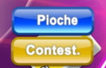

20 |
Cartes |
 |
|
Vous jouez avec des cartes bleues, vertes, jaunes et rouges d'une valeur comprise entre 0 et 9. Ce sont les cartes de base qui déterminent le déroulement du jeu. +2 Selon les règles standard, quand une carte "+2" est jouée, le joueur suivant doit piocher deux cartes et passer son tour. Si vous jouez avec les règles des Pénalités, que le joueur qui vous précède joue un "+2" et que vous avez vous aussi un "+2", vous pouvez le jouer sans être pénalisé. Le joueur qui joue après vous verra sa pénalité doublée, sauf s'il a lui aussi une carte identique. Dans ce cas, la pénalité est transférée au joueur suivant. Il y a 8 cartes "+2" dans le jeu : 2 bleues, 2 vertes, 2 rouges et 2 jaunes.
Passer un tour Quand cette carte est jouée, le joueur suivant doit passer son tour. Il y a 8 cartes "Passer un tour" dans le jeu : 2 bleues, 2 vertes, 2 rouges et 2 jaunes.
Inversion Jouer cette carte permet d'inverser le sens du jeu. Le jeu continue dans cette nouvelle direction jusqu'à ce qu'une autre carte "Inversion" soit jouée. Il y a 8 cartes "Inversion" dans le jeu : 2 bleues, 2 vertes, 2 rouges et 2 jaunes.
Joker Les "Jokers" peuvent être joués après une carte de n'importe quelle couleur. Le joueur qui joue cette carte peut décider de continuer la partie avec la couleur de son choix parmi les quatre proposées.
+4 Jouer cette carte ne vous permet pas uniquement de changer la couleur du jeu, elle force aussi le joueur suivant à piocher quatre cartes et à passer son tour. Toutefois, cette carte ne peut être jouée que quand le joueur n'a aucune carte de la même couleur dans les mains. Un joueur peut également choisir de bluffer et de jouer cette carte même s'il possède une carte jouable, mais si cette décision est contestée et que la contestation est réussie, il devra piocher quatre cartes. Note : si un joueur possède une carte du même chiffre ou du même symbole ("Inversion", "Passer un tour", "+2"), il peut quand même jouer légalement une carte "+4". Par contre, il est illégal de jouer une carte "+4" si on possède une carte "Joker".
Si le joueur qui vous précède joue une carte "+4", vous pouvez la contester en sélectionnant "Contestation", ou vous pouvez piocher quatre cartes en sélectionnant "Pioche".  |


 |
 |
 |